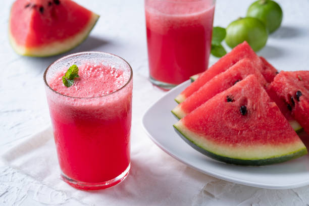

Watermelon Juice

Description
Nothing can be as refreshing as the watermelon juice after a long timresome day. Here's the perfect recipe for an absolutely refreshing watermelon juice!
Ingredients
- 1 small sweet watermelon (a 6 pounder will do)
- 1 small lime, juiced
Steps
- Slice the watermelon in half. Using a big spoon, scoop chunks of sweet watermelon into the blender. Discard the rind.
- Blend the watermelon until it is totally pulverized. This shouldn't take more than a minute. For extra flavor, squeeze the juice of one small lime into the blender and blend for a few seconds.
- If your watermelon is notably pulpy or seeded, pour the mixture through a fine mesh strainer into a pitcher. If not, you can pour it directly into glasses filled with ice. Watermelon juice will keep in the refrigerator, covered, for up to 4 days. The juice will separate over time; stir it with a spoon to recombine.
Refreshing, naturally sweet watermelon juice is ready to be savoured!